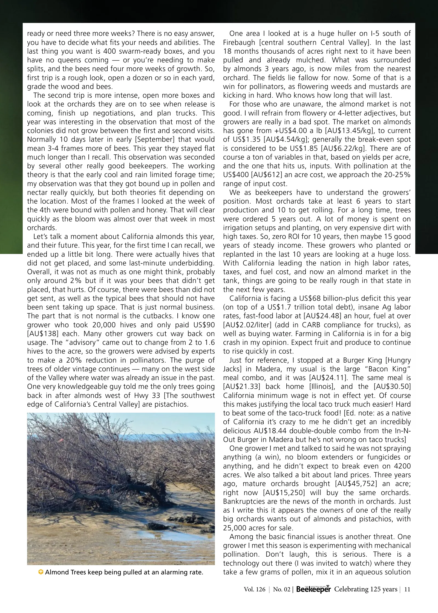

ready or need three more weeks? There is no easy answer,
you have to decide what fits your needs and abilities. The
last thing you want is 400 swarm-ready boxes, and you
have no queens coming — or you’re needing to make
splits, and the bees need four more weeks of growth. So,
first trip is a rough look, open a dozen or so in each yard,
grade the wood and bees.
The second trip is more intense, open more boxes and
look at the orchards they are on to see when release is
coming, finish up negotiations, and plan trucks. This
year was interesting in the observation that most of the
colonies did not grow between the first and second visits.
Normally 10 days later in early [September] that would
mean 3-4 frames more of bees. This year they stayed flat
much longer than I recall. This observation was seconded
by several other really good beekeepers. The working
theory is that the early cool and rain limited forage time;
my observation was that they got bound up in pollen and
nectar really quickly, but both theories fit depending on
the location. Most of the frames I looked at the week of
the 4th were bound with pollen and honey. That will clear
quickly as the bloom was almost over that week in most
orchards.
Let’s talk a moment about California almonds this year,
and their future. This year, for the first time I can recall, we
ended up a little bit long. There were actually hives that
did not get placed, and some last-minute underbidding.
Overall, it was not as much as one might think, probably
only around 2% but if it was your bees that didn’t get
placed, that hurts. Of course, there were bees than did not
get sent, as well as the typical bees that should not have
been sent taking up space. That is just normal business.
The part that is not normal is the cutbacks. I know one
grower who took 20,000 hives and only paid US$90
[AU$138] each. Many other growers cut way back on
usage. The “advisory” came out to change from 2 to 1.6
hives to the acre, so the growers were advised by experts
to make a 20% reduction in pollinators. The purge of
trees of older vintage continues — many on the west side
of the Valley where water was already an issue in the past.
One very knowledgeable guy told me the only trees going
back in after almonds west of Hwy 33 [The southwest
edge of California’s Central Valley] are pistachios.
One area I looked at is a huge huller on I-5 south of
Firebaugh [central southern Central Valley]. In the last
18 months thousands of acres right next to it have been
pulled and already mulched. What was surrounded
by almonds 3 years ago, is now miles from the nearest
orchard. The fields lie fallow for now. Some of that is a
win for pollinators, as flowering weeds and mustards are
kicking in hard. Who knows how long that will last.
For those who are unaware, the almond market is not
good. I will refrain from flowery or 4-letter adjectives, but
growers are really in a bad spot. The market on almonds
has gone from +US$4.00 a lb [AU$13.45/kg], to current
of US$1.35 [AU$4.54/kg]; generally the break-even spot
is considered to be US$1.85 [AU$6.22/kg]. There are of
course a ton of variables in that, based on yields per acre,
and the one that hits us, inputs. With pollination at the
US$400 [AU$612] an acre cost, we approach the 20-25%
range of input cost.
We as beekeepers have to understand the growers’
position. Most orchards take at least 6 years to start
production and 10 to get rolling. For a long time, trees
were ordered 5 years out. A lot of money is spent on
irrigation setups and planting, on very expensive dirt with
high taxes. So, zero ROI for 10 years, then maybe 15 good
years of steady income. These growers who planted or
replanted in the last 10 years are looking at a huge loss.
With California leading the nation in high labor rates,
taxes, and fuel cost, and now an almond market in the
tank, things are going to be really rough in that state in
the next few years.
California is facing a US$68 billion-plus deficit this year
(on top of a US$1.7 trillion total debt), insane Ag labor
rates, fast-food labor at [AU$24.48] an hour, fuel at over
[AU$2.02/liter] (add in CARB compliance for trucks), as
well as buying water. Farming in California is in for a big
crash in my opinion. Expect fruit and produce to continue
to rise quickly in cost.
Just for reference, I stopped at a Burger King [Hungry
Jacks] in Madera, my usual is the large “Bacon King”
meal combo, and it was [AU$24.11]. The same meal is
[AU$21.33] back home [Illinois], and the [AU$30.50]
California minimum wage is not in effect yet. Of course
this makes justifying the local taco truck much easier! Hard
to beat some of the taco-truck food! [Ed. note: as a native
of California it’s crazy to me he didn’t get an incredibly
delicious AU$18.44 double-double combo from the In-N-
Out Burger in Madera but he’s not wrong on taco trucks]
One grower I met and talked to said he was not spraying
anything (a win), no bloom extenders or fungicides or
anything, and he didn’t expect to break even on 4200
acres. We also talked a bit about land prices. Three years
ago, mature orchards brought [AU$45,752] an acre;
right now [AU$15,250] will buy the same orchards.
Bankruptcies are the news of the month in orchards. Just
as I write this it appears the owners of one of the really
big orchards wants out of almonds and pistachios, with
25,000 acres for sale.
Among the basic financial issues is another threat. One
grower I met this season is experimenting with mechanical
pollination. Don’t laugh, this is serious. There is a
technology out there (I was invited to watch) where they
take a few grams of pollen, mix it in an aqueous solution
Almond Trees keep being pulled at an alarming rate.
Vol. 126 | No. 02 |
Celebrating 125 years | 11